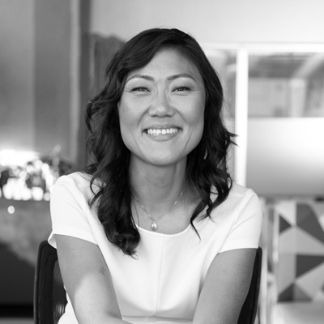
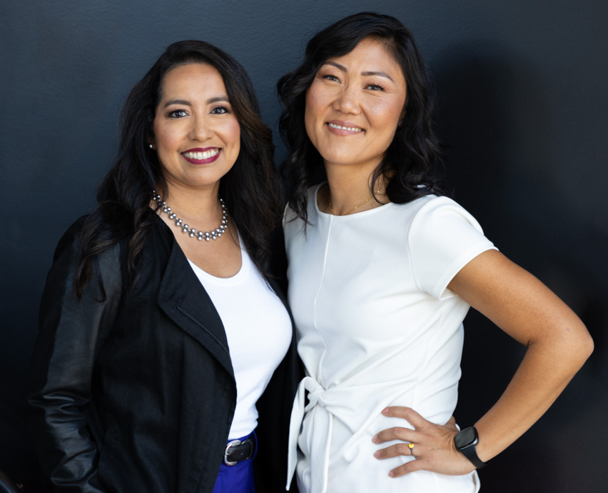

Grace Lee
Special AdvisorGrace Lee has spent her career turning bold ideas into transformative realities, ensuring entrepreneurship remains possible for everyone.
Women build businesses that generate positive ripple effects across our communities and ecosystems. They hire more women, invest in families, and build a more sustainable future. And yet, they remain incredibly underfunded.
We believe capital should flow to the best ideas, not only to the ones that fit the traditional pattern. AMH exists to help reshape that system for this generation and the next.
in economic impact
jobs created
In 2025, all-female founding teams received just 1.1% of total venture capital.
Jenny Flores has always felt the pull to bridge worlds and connect people to opportunity. Born in El Salvador, Jenny immigrated to San Francisco at three years old. By the time she was in elementary school, she was translating for her mother and her community, navigating systems that weren’t designed for people like them, finding the pathways through anyway. That early experience of bridging worlds, of making the opaque legible, became the foundation of everything she would build.
Over a twenty-year career spanning corporate, public, and nonprofit sectors, Jenny became an architect of systems that moved capital where it was needed most. At Wells Fargo, she co-designed a $420M fund, a landmark initiative that supported 336,000 small businesses, 51% of them women-owned, and preserved 461,000 jobs during the COVID-19 pandemic. She’s led multi-million dollar investments and helped architect a $1 billion commitment to advance sustainable businesses and growth-oriented entrepreneurs across the US.
Today she’s building for the future. Jenny sees the blind spots in venture capital and is creating the tools and pathways to make women founders more visible, credible, and backable. Co-founded with Grace Lee, AMH stands for Amplifying Markets for Her, a dedication and a declaration: the market for women-founded ventures is far larger than the capital flowing into it, and AMH exists to close that gap. Women are a smart investment, and the data proves it. They deliver strong returns, hire more women, and build businesses that strengthen communities and support the environment. Investing in women doesn’t just drive financial outcome, it drives broader impact.
Join us in rewriting the playbook for venture funding and investing in a better future for all.

Jenny has spent her career building systems and directing capital where it’s needed most, at the intersection of capital, policy, and access.
After witnessing women founders consistently overlooked, she co-founded AMH Catalyst Center to make them visible, fundable, and fully recognized for their potential.
Our Board of Directors provides the leadership and strategy to ensure we deliver on our mission to reimagine venture capital and expand opportunities for more entrepreneurs.

Grace Lee has spent her career turning bold ideas into transformative realities, ensuring entrepreneurship remains possible for everyone.
Director of Investments, Candide Group
Kimberli is a Chicana activist, investor, and community development leader who has directed billions into underinvested communities through transformative programs.
Former Head of Community Impact, Comcast California
Lorena is an innovative leader at the intersection of technology, government, and social impact.
Senior Director, Asset Funders Network
Rebeca advances equitable wealth building and economic mobility connecting grantmakers and policymakers.